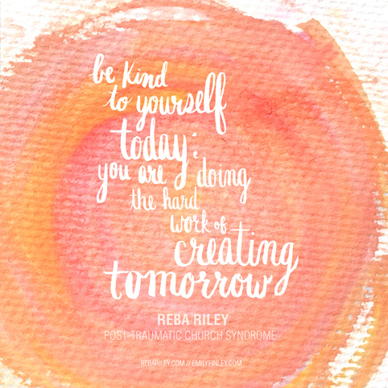
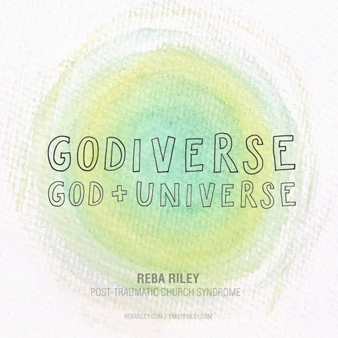
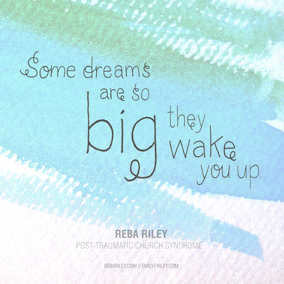
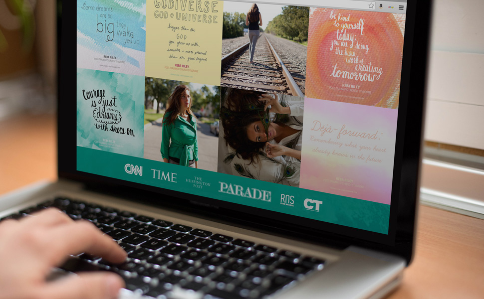

© 2015 Emily Finley All Rights Reserved // Hand-Coded
PTCS ARTWORK
ARTWORK FOR REBA RILEY // PHOTOSHOP, MICRON PEN, PENTEL BRUSH PEN, WATERCOLOR
Reba Riley, author of Post-Traumatic Church Syndrome (published by Simon & Schuster), is a Christian novelist depicting her journey with religion through a humorous and captivating memoir. While studying different practices, she found adventure, opportunity, and herself. Before going on tour with the author of Eat, Pray, Love, Elizabeth Gilbert, Riley redesigned her social media platform.
Riley wanted to have a series of colorful images to share on Facebook, Instagram, Twitter, and her website, expressing the most popular quotes from her novel. By experimenting with hand lettering and watercolor, manipulating them in Photoshop, I created an organic set of quotes captivating her memoir's best qualities.



